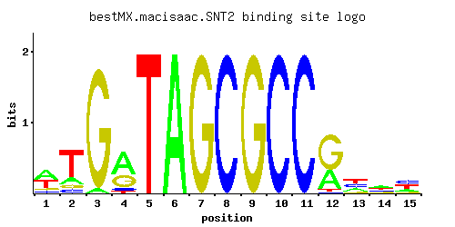

SNT2
YGL131C
DNA binding protein with similarity to the S. pombe Snt2 protein; computational analysis suggests a role in regulation of expression of genes encoding amine transporters
Best-performing DNA-binding model.

View and copy the recommended matrices ↘
A | 0.446 0.162 0.036 0.570 0.001 0.997 0.001 0.001 0.001 0.001 0.001 0.326 0.208 0.333 0.185 C | 0.099 0.088 0.001 0.081 0.001 0.001 0.001 0.997 0.001 0.997 0.997 0.011 0.349 0.190 0.360 G | 0.099 0.088 0.962 0.313 0.001 0.001 0.997 0.001 0.997 0.001 0.001 0.627 0.088 0.167 0.099 T | 0.356 0.662 0.001 0.036 0.997 0.001 0.001 0.001 0.001 0.001 0.001 0.036 0.356 0.310 0.356
A | 44 16 3 56 0 99 0 0 0 0 0 32 20 33 18 C | 9 8 0 8 0 0 0 99 0 99 99 1 34 19 36 G | 9 8 96 31 0 0 99 0 99 0 0 62 8 16 9 T | 35 66 0 3 99 0 0 0 0 0 0 3 35 31 35
A | 0.33 -0.68 -2.18 0.58 -5.77 1.14 -5.77 -5.77 -5.77 -5.77 -5.77 0.02 -0.43 0.04 -0.55 C | -0.60 -0.72 -5.19 -0.80 -5.19 -5.19 -5.19 1.71 -5.19 1.71 1.71 -2.80 0.66 0.05 0.69 G | -0.60 -0.72 1.68 0.55 -5.19 -5.19 1.71 -5.19 1.71 -5.19 -5.19 1.25 -0.72 -0.07 -0.60 T | 0.11 0.73 -5.77 -2.18 1.14 -5.77 -5.77 -5.77 -5.77 -5.77 -5.77 -2.18 0.11 -0.03 0.11
Alternative candidate matrices 3
Historical matrix candidates from the original ScerTF database. Expand a source to inspect its original logo, scores, and matrix values.
SNT2Foat et. al.P = 1View matrix ↘
SNT2Harbison et. al.P = 2.81e-33View matrix ↘
SNT2Pachkov et alP = 3.91e-32View matrix ↘
Gene-level annotations and interactions.
Genes bound in ChIP-chip experiments 71 genes
YAL038W, YAL039C, YAL053W, YAL054C, YAR050W, YBL073W, YBL074C, YBL075C, YBL095W, YBR138C, YBR139W, YBR143C, YCR090C, YCR091W, YDR008C, YDR009W, YDR046C, YDR047W, YDR261W-A, YDR261W-B, YDR366C, YDR368W, YDR543C, YER189W, YER190W, YGR110W, YHR009C, YHR010W, YHR138C, YHR160C, YHR175W, YHR214C-B, YHR214C-C, YHR215W, YHR216W, YHR218W, YHR219W, YIL102C, YIL155C, YIL159W, YIL160C, YJL092W, YJL093C, YJL148W, YJL184W, YJL185C, YJR130C, YJR131W, YJR153W, YKL171W, YLL004W, YLL005C, YLR149C, YLR150W, YLR176C, YLR177W, YLR228C, YLR230W, YLR373C, YLR375W, YMR045C, YMR046C, YMR052W, YNL181W, YNL182C, YNL337W, YOL116W, YOR236W, YPR104C, YPR158W, YPR184W
Genes affected by TF deletion 1 genes
No Data